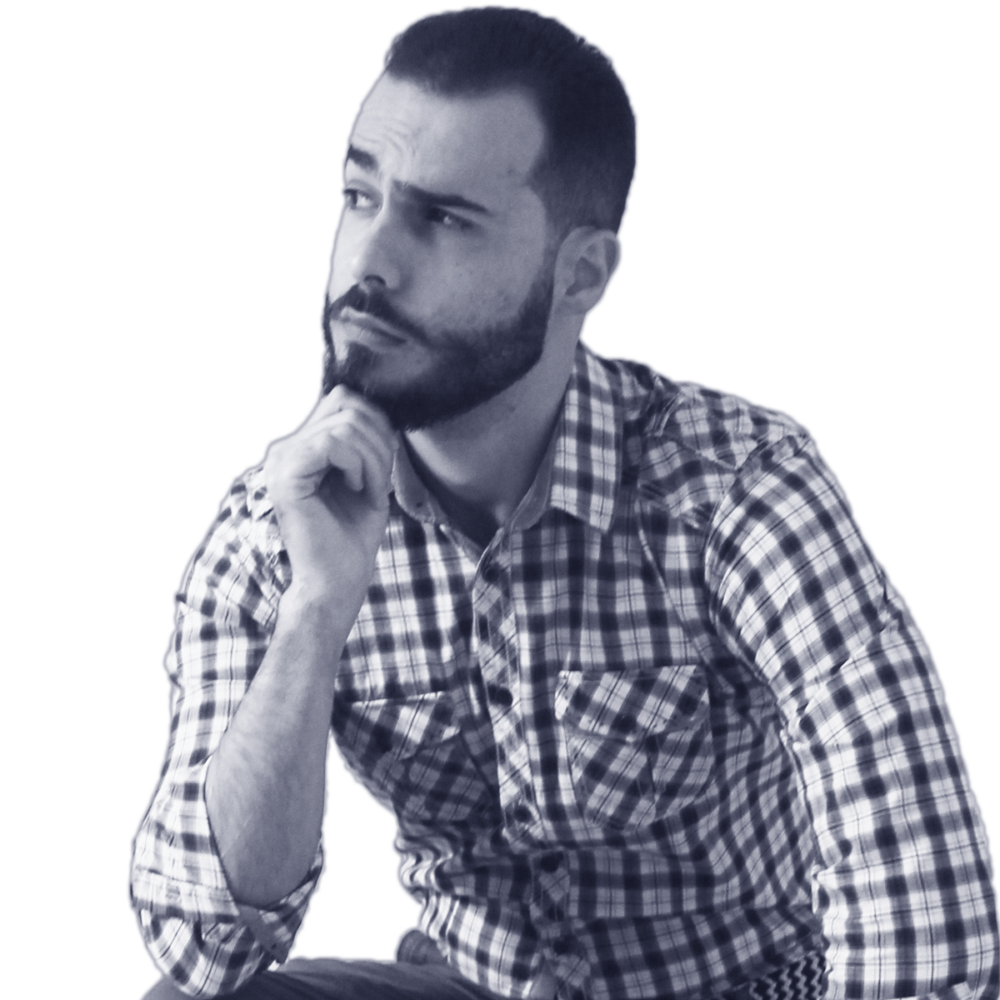
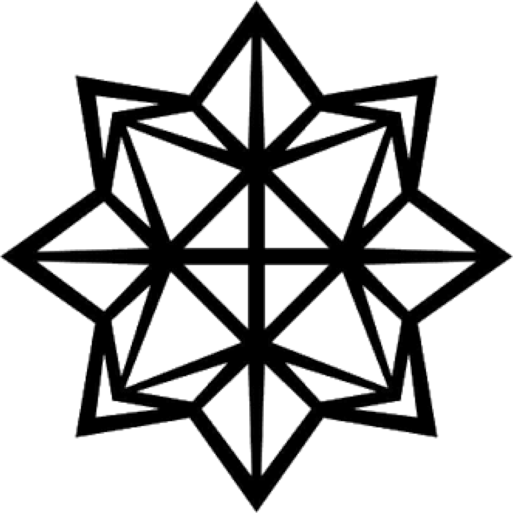
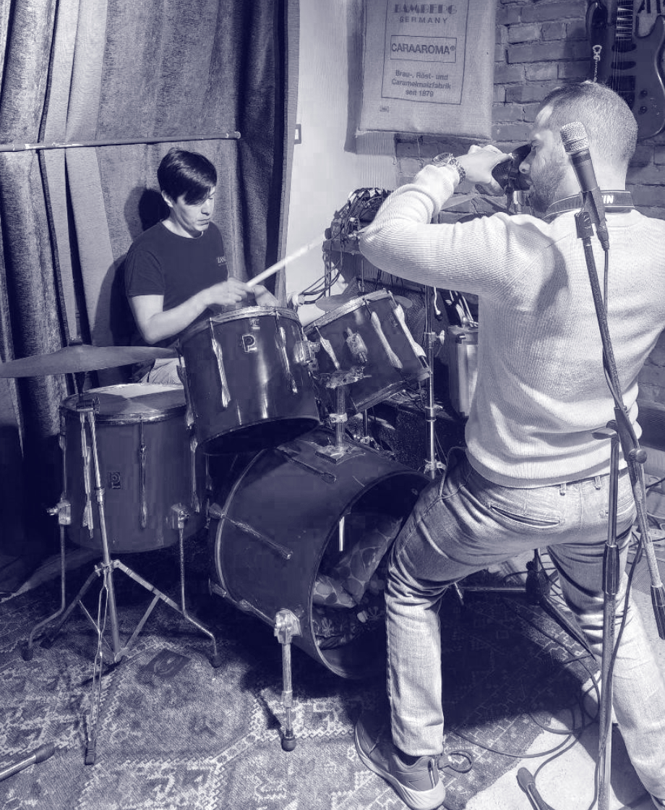

Su di meAbout meÜber mich
Dieci anni di marchi disegnati a mano e finiti in vettoriale.Ten years of marks drawn by hand and finished in vectors.Zehn Jahre Zeichen, von Hand gezeichnet und in Vektoren fertiggestellt.
Ho iniziato disegnando insegne per i negozi sotto casa e non ho mai smesso di partire dalla matita. Mi piacciono i progetti in cui si parla molto prima di aprire il computer: chi siete, chi volete accanto, cosa non volete assolutamente sembrare. Lavoro da solo, su pochi progetti alla volta, e vi tengo dentro ogni passaggio.I started by drawing signs for the shops on my street, and I never stopped starting with a pencil. I like projects where we talk a lot before opening the computer: who you are, who you want beside you, what you absolutely don't want to look like. I work on my own, on a few projects at a time, and I keep you inside every step.Angefangen habe ich mit Schildern für die Läden in meiner Straße, und ich beginne bis heute mit dem Bleistift. Ich mag Projekte, bei denen viel gesprochen wird, bevor der Rechner aufgeht: wer Sie sind, wen Sie an Ihrer Seite wollen, wonach Sie auf keinen Fall aussehen möchten. Ich arbeite allein, an wenigen Projekten gleichzeitig, und binde Sie in jeden Schritt ein.


FormazioneEducationAusbildung
Grafica editoriale all'Accademia di Belle Arti di Catania.Editorial design at the Academy of Fine Arts in Catania.Editorial Design an der Akademie der Bildenden Künste in Catania.
Mi sono formato al corso di grafica editoriale dell'Accademia di Belle Arti di Catania. Lì ho imparato a lavorare sulla pagina: griglie, gerarchie, tipografia e stampa, con progetti seguiti dalla prima gabbia fino al file esecutivo. È la base che porto ancora dentro ogni identità che disegno.I trained on the editorial design course at the Academy of Fine Arts in Catania. There I learnt to work on the page: grids, hierarchies, typography and print, with projects followed from the first layout grid through to the press-ready file. It is the foundation I still carry into every identity I design.Ausgebildet wurde ich im Studiengang Editorial Design an der Akademie der Bildenden Künste in Catania. Dort habe ich gelernt, an der Seite zu arbeiten: Raster, Hierarchien, Typografie und Druck, mit Projekten vom ersten Satzspiegel bis zur Druckdatei. Diese Grundlage trage ich bis heute in jede Identität, die ich gestalte.
ProfessionePracticeBeruf
Marchi, logotipi e identità visive per il digitale e per la stampa.Marks, logotypes and visual identities for digital and for print.Marken, Logotypen und visuelle Identitäten für Digital und Druck.
Disegno marchi, logotipi e sistemi di identità visiva, e li porto su tutti i supporti: canali digitali, contenuti social e stampati. Mi occupo degli elaborati grafici e fotografici che ne fanno parte, dall'editing alla post produzione delle immagini.I design marks, logotypes and visual identity systems, and carry them across every medium: digital channels, social content and print. I take care of the graphic and photographic material that goes with them, from image editing to post-production.Ich gestalte Marken, Logotypen und visuelle Identitätssysteme und bringe sie auf alle Medien: digitale Kanäle, Social-Media-Inhalte und Druck. Dazu gehören die grafischen und fotografischen Arbeiten, vom Bildbearbeiten bis zur Postproduktion.
